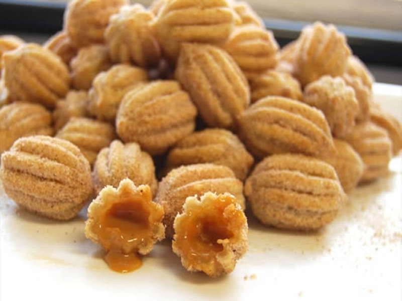

Bolinha de Churros

Ingredientes (40 porções)
-
Uma xícara e meia (chá) de leite
-
Duas colheres (sopa) de margarina
-
Meia xícara (chá) de farinha de trigo
-
Sal a gosto
-
Açúcar a gosto
Modo de preparo
-
Em uma panela, adicione o leite, a água, a manteiga e o sal.
-
Quando o leite ferver, adicione a farinha de trigo e mexa até a massa soltar do fundo da panela.
-
Faça bolinhas e frite no óleo bem quente até dourar.
-
Recheie como quiser e sirva.